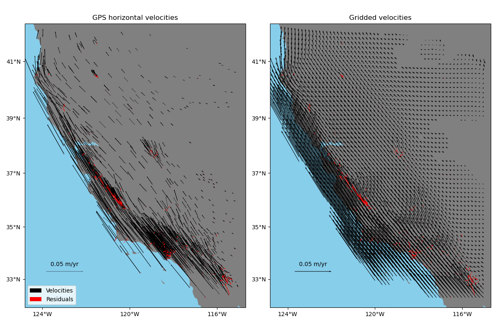

<!DOCTYPE html>
<!--[if IE 8]><html class="no-js lt-ie9" lang="en" > <![endif]-->
<!--[if gt IE 8]><!--> <html class="no-js" lang="en" > <!--<![endif]-->
<head>
  <meta charset="utf-8">
  
  <meta name="viewport" content="width=device-width, initial-scale=1.0">
  
    
        <title>Gridding 2-component GPS coupled by elasticity &mdash; Erizo</title>
    


  
  
    <link rel="shortcut icon" href="../_static/favicon.png"/>
  
  
  

  
  <script type="text/javascript" src="../_static/js/modernizr.min.js"></script>
  
    
      <script type="text/javascript" id="documentation_options" data-url_root="../" src="../_static/documentation_options.js"></script>
        <script type="text/javascript" src="../_static/jquery.js"></script>
        <script type="text/javascript" src="../_static/underscore.js"></script>
        <script type="text/javascript" src="../_static/doctools.js"></script>
        <script type="text/javascript" src="../_static/language_data.js"></script>
    
    <script type="text/javascript" src="../_static/js/theme.js"></script>

    

  
  <link rel="stylesheet" href="../_static/css/theme.css" type="text/css" />
  <link rel="stylesheet" href="../_static/pygments.css" type="text/css" />
  <link rel="stylesheet" href="../_static/style.css" type="text/css" />
  <link rel="stylesheet" href="../_static/gallery.css" type="text/css" />
  <link rel="stylesheet" href="../_static/gallery-binder.css" type="text/css" />
  <link rel="stylesheet" href="../_static/gallery-dataframe.css" type="text/css" />
    <link rel="index" title="Index" href="../genindex.html" />
    <link rel="search" title="Search" href="../search.html" />
    <link rel="next" title="Example of Function" href="example.html" />
    <link rel="prev" title="Gallery" href="index.html" />
    <!-- Google Analytics tracking code -->
    <script>
      (function(i,s,o,g,r,a,m){i['GoogleAnalyticsObject']=r;i[r]=i[r]||function(){
        (i[r].q=i[r].q||[]).push(arguments)},i[r].l=1*new
            Date();a=s.createElement(o),
          m=s.getElementsByTagName(o)[0];a.async=1;a.src=g;m.parentNode.insertBefore(a,m)
                })(window,document,'script','https://www.google-analytics.com/analytics.js','ga');

      ga('create', 'UA-38125837-1', 'auto', {'storage': 'none'});
      ga('set', 'anonymizeIp', true);
      ga('send', 'pageview');
    </script>

</head>

<body class="wy-body-for-nav">

   
  <div class="wy-grid-for-nav">
    
    <nav data-toggle="wy-nav-shift" class="wy-nav-side">
      <div class="wy-side-scroll">
        <div class="wy-side-nav-search" >
          

          
            <a href="../index.html" class="icon icon-home"> Erizo
          

          
          </a>

          
            
            
              <div class="version">
                dev
              </div>
            
          

          
<div role="search">
  <form id="rtd-search-form" class="wy-form" action="../search.html" method="get">
    <input type="text" name="q" placeholder="Search docs" />
    <input type="hidden" name="check_keywords" value="yes" />
    <input type="hidden" name="area" value="default" />
  </form>
</div>

          
        </div>

        <div class="wy-menu wy-menu-vertical" data-spy="affix" role="navigation" aria-label="main navigation">
          
    
            
            
              
            
            
              <p class="caption"><span class="caption-text">Getting Started</span></p>
<ul class="current">
<li class="toctree-l1"><a class="reference internal" href="../tutorials/overview.html">Overview</a></li>
<li class="toctree-l1"><a class="reference internal" href="../install.html">Installing</a></li>
<li class="toctree-l1"><a class="reference internal" href="../citing.html">Citing Erizo</a></li>
<li class="toctree-l1 current"><a class="reference internal" href="index.html">Gallery</a><ul class="current">
<li class="toctree-l2 current"><a class="current reference internal" href="#">Gridding 2-component GPS coupled by elasticity</a></li>
<li class="toctree-l2"><a class="reference internal" href="example.html">Example of Function</a></li>
</ul>
</li>
</ul>
<p class="caption"><span class="caption-text">Reference documentation</span></p>
<ul>
<li class="toctree-l1"><a class="reference internal" href="../api/index.html">API Reference</a></li>
<li class="toctree-l1"><a class="reference internal" href="../changes.html">Changelog</a></li>
<li class="toctree-l1"><a class="reference internal" href="../references.html">References</a></li>
</ul>

            
          

    
        <p class="caption">
            <span class="caption-text">
            
                Getting help and contributing
            
            </span>
        </p>
        <ul>
            
                <li class="toctree-l1"><a href="https://www.fatiando.org"><i class="fa fa-external-link-square fa-fw"></i> Fatiando a Terra</a></li>
            
                <li class="toctree-l1"><a href="https://github.com/fatiando/erizo/blob/master/CONTRIBUTING.md"><i class="fa fa-users fa-fw"></i> Contributing</a></li>
            
                <li class="toctree-l1"><a href="https://github.com/fatiando/erizo/blob/master/CODE_OF_CONDUCT.md"><i class="fa fa-gavel fa-fw"></i> Code of Conduct</a></li>
            
                <li class="toctree-l1"><a href="http://contact.fatiando.org"><i class="fa fa-comment fa-fw"></i> Contact</a></li>
            
                <li class="toctree-l1"><a href="https://github.com/fatiando/erizo"><i class="fa fa-github fa-fw"></i> Source Code</a></li>
            
        </ul>
    

        </div>
      </div>
    </nav>

    <section data-toggle="wy-nav-shift" class="wy-nav-content-wrap">

      
      <nav class="wy-nav-top" aria-label="top navigation">
        
          <i data-toggle="wy-nav-top" class="fa fa-bars"></i>
          <a href="../index.html">Erizo</a>
        
      </nav>


      <div class="wy-nav-content">
        
        <div class="rst-content">
        
          


<div role="navigation" aria-label="breadcrumbs navigation">

  <ul class="wy-breadcrumbs">
    
      <li><a href="../index.html">Docs</a> &raquo;</li>
        
          <li><a href="index.html">Gallery</a> &raquo;</li>
        
      <li>Gridding 2-component GPS coupled by elasticity</li>
    
    
    <li class="source-link">
        
            
                
                
                
                    
                
                <a href="https://github.com/fatiando/erizo/edit/master/doc/../examples/elastic2d.py"
                   class="fa fa-github"> Improve this page</a>
            
        
        
    </li>

  </ul>

  
  <hr/>
</div>
          <div role="main" class="document" itemscope="itemscope" itemtype="http://schema.org/Article">
           <div itemprop="articleBody">
            
  <div class="sphx-glr-download-link-note admonition note">
<p class="admonition-title">Note</p>
<p>Click <a class="reference internal" href="#sphx-glr-download-gallery-elastic2d-py"><span class="std std-ref">here</span></a>     to download the full example code</p>
</div>
<div class="sphx-glr-example-title section" id="gridding-2-component-gps-coupled-by-elasticity">
<span id="sphx-glr-gallery-elastic2d-py"></span><h1>Gridding 2-component GPS coupled by elasticity<a class="headerlink" href="#gridding-2-component-gps-coupled-by-elasticity" title="Permalink to this headline">¶</a></h1>
<p>One way of gridding vector data would be grid each component separately.
Alternatively, <a class="reference internal" href="../api/generated/erizo.Elastic2D.html#erizo.Elastic2D" title="erizo.Elastic2D"><code class="xref py py-class docutils literal notranslate"><span class="pre">erizo.Elastic2D</span></code></a> can grid two components simultaneously
in a way that couples them through elastic deformation theory. This is
particularly suited, though not exclusive, to data that represent
elastic/semi-elastic deformation, like horizontal GPS velocities.</p>

<p class="sphx-glr-script-out">Out:</p>
<div class="sphx-glr-script-out highlight-none notranslate"><div class="highlight"><pre><span></span>/home/runner/work/erizo/erizo/.nox/docs/lib/python3.8/site-packages/numba/np/ufunc/parallel.py:363: NumbaWarning: The TBB threading layer requires TBB version 2019.5 or later i.e., TBB_INTERFACE_VERSION &gt;= 11005. Found TBB_INTERFACE_VERSION = 9107. The TBB threading layer is disabled.
  warnings.warn(problem)
Cross-validation R^2 score: 0.98
</pre></div>
</div>
<div class="line-block">
<div class="line"><br /></div>
</div>
<div class="highlight-default notranslate"><div class="highlight"><pre><span></span><span class="kn">import</span> <span class="nn">matplotlib.pyplot</span> <span class="k">as</span> <span class="nn">plt</span>
<span class="kn">import</span> <span class="nn">cartopy.crs</span> <span class="k">as</span> <span class="nn">ccrs</span>
<span class="kn">import</span> <span class="nn">numpy</span> <span class="k">as</span> <span class="nn">np</span>
<span class="kn">import</span> <span class="nn">pyproj</span>
<span class="kn">import</span> <span class="nn">verde</span> <span class="k">as</span> <span class="nn">vd</span>
<span class="kn">import</span> <span class="nn">erizo</span> <span class="k">as</span> <span class="nn">ez</span>


<span class="c1"># Fetch the GPS data from the U.S. West coast that is shipped with Verde. We&#39;ll</span>
<span class="c1"># grid only the horizontal components of the velocities</span>
<a href="https://pandas.pydata.org/pandas-docs/stable/reference/api/pandas.DataFrame.html#pandas.DataFrame" title="pandas.DataFrame" class="sphx-glr-backref-module-pandas sphx-glr-backref-type-py-class sphx-glr-backref-instance"><span class="n">data</span></a> <span class="o">=</span> <a href="https://www.fatiando.org/verde/latest/api/generated/verde.datasets.fetch_california_gps.html#verde.datasets.fetch_california_gps" title="verde.datasets.fetch_california_gps" class="sphx-glr-backref-module-verde-datasets sphx-glr-backref-type-py-function"><span class="n">vd</span><span class="o">.</span><span class="n">datasets</span><span class="o">.</span><span class="n">fetch_california_gps</span></a><span class="p">()</span>
<a href="https://docs.python.org/3/library/stdtypes.html#tuple" title="builtins.tuple" class="sphx-glr-backref-module-builtins sphx-glr-backref-type-py-class sphx-glr-backref-instance"><span class="n">coordinates</span></a> <span class="o">=</span> <span class="p">(</span><a href="https://pandas.pydata.org/pandas-docs/stable/reference/api/pandas.Series.values.html#pandas.Series.values" title="pandas.Series.values" class="sphx-glr-backref-module-pandas sphx-glr-backref-type-py-method"><span class="n">data</span><span class="o">.</span><span class="n">longitude</span><span class="o">.</span><span class="n">values</span></a><span class="p">,</span> <a href="https://pandas.pydata.org/pandas-docs/stable/reference/api/pandas.Series.values.html#pandas.Series.values" title="pandas.Series.values" class="sphx-glr-backref-module-pandas sphx-glr-backref-type-py-method"><span class="n">data</span><span class="o">.</span><span class="n">latitude</span><span class="o">.</span><span class="n">values</span></a><span class="p">)</span>
<a href="https://docs.python.org/3/library/stdtypes.html#tuple" title="builtins.tuple" class="sphx-glr-backref-module-builtins sphx-glr-backref-type-py-class sphx-glr-backref-instance"><span class="n">region</span></a> <span class="o">=</span> <a href="https://www.fatiando.org/verde/latest/api/generated/verde.get_region.html#verde.get_region" title="verde.get_region" class="sphx-glr-backref-module-verde sphx-glr-backref-type-py-function"><span class="n">vd</span><span class="o">.</span><span class="n">get_region</span></a><span class="p">(</span><a href="https://docs.python.org/3/library/stdtypes.html#tuple" title="builtins.tuple" class="sphx-glr-backref-module-builtins sphx-glr-backref-type-py-class sphx-glr-backref-instance"><span class="n">coordinates</span></a><span class="p">)</span>
<span class="c1"># Use a Mercator projection because Elastic2D is a Cartesian gridder</span>
<span class="n">projection</span> <span class="o">=</span> <span class="n">pyproj</span><span class="o">.</span><span class="n">Proj</span><span class="p">(</span><span class="n">proj</span><span class="o">=</span><span class="s2">&quot;merc&quot;</span><span class="p">,</span> <span class="n">lat_ts</span><span class="o">=</span><a href="https://pandas.pydata.org/pandas-docs/stable/reference/api/pandas.Series.mean.html#pandas.Series.mean" title="pandas.Series.mean" class="sphx-glr-backref-module-pandas sphx-glr-backref-type-py-method"><span class="n">data</span><span class="o">.</span><span class="n">latitude</span><span class="o">.</span><span class="n">mean</span></a><span class="p">())</span>

<span class="c1"># Split the data into a training and testing set. We&#39;ll fit the gridder on the</span>
<span class="c1"># training set and use the testing set to evaluate how well the gridder is</span>
<span class="c1"># performing.</span>
<a href="https://docs.python.org/3/library/stdtypes.html#tuple" title="builtins.tuple" class="sphx-glr-backref-module-builtins sphx-glr-backref-type-py-class sphx-glr-backref-instance"><span class="n">train</span></a><span class="p">,</span> <a href="https://docs.python.org/3/library/stdtypes.html#tuple" title="builtins.tuple" class="sphx-glr-backref-module-builtins sphx-glr-backref-type-py-class sphx-glr-backref-instance"><span class="n">test</span></a> <span class="o">=</span> <a href="https://www.fatiando.org/verde/latest/api/generated/verde.train_test_split.html#verde.train_test_split" title="verde.train_test_split" class="sphx-glr-backref-module-verde sphx-glr-backref-type-py-function"><span class="n">vd</span><span class="o">.</span><span class="n">train_test_split</span></a><span class="p">(</span>
    <span class="n">projection</span><span class="p">(</span><span class="o">*</span><a href="https://docs.python.org/3/library/stdtypes.html#tuple" title="builtins.tuple" class="sphx-glr-backref-module-builtins sphx-glr-backref-type-py-class sphx-glr-backref-instance"><span class="n">coordinates</span></a><span class="p">),</span> <span class="p">(</span><a href="https://pandas.pydata.org/pandas-docs/stable/reference/api/pandas.Series.html#pandas.Series" title="pandas.Series" class="sphx-glr-backref-module-pandas sphx-glr-backref-type-py-class sphx-glr-backref-instance"><span class="n">data</span><span class="o">.</span><span class="n">velocity_east</span></a><span class="p">,</span> <a href="https://pandas.pydata.org/pandas-docs/stable/reference/api/pandas.Series.html#pandas.Series" title="pandas.Series" class="sphx-glr-backref-module-pandas sphx-glr-backref-type-py-class sphx-glr-backref-instance"><span class="n">data</span><span class="o">.</span><span class="n">velocity_north</span></a><span class="p">),</span> <span class="n">random_state</span><span class="o">=</span><span class="mi">0</span>
<span class="p">)</span>

<span class="c1"># We&#39;ll make a 10 arc-minute grid in the end.</span>
<a href="https://docs.python.org/3/library/functions.html#float" title="builtins.float" class="sphx-glr-backref-module-builtins sphx-glr-backref-type-py-class sphx-glr-backref-instance"><span class="n">spacing</span></a> <span class="o">=</span> <span class="mi">10</span> <span class="o">/</span> <span class="mi">60</span>

<span class="c1"># Chain together a blocked mean to avoid aliasing, a polynomial trend to take</span>
<span class="c1"># care of the increase toward the coast, and finally the vector gridder using</span>
<span class="c1"># Poisson&#39;s ratio 0.5 to couple the two horizontal components.</span>
<a href="https://www.fatiando.org/verde/latest/api/generated/verde.Chain.html#verde.Chain" title="verde.Chain" class="sphx-glr-backref-module-verde sphx-glr-backref-type-py-class sphx-glr-backref-instance"><span class="n">chain</span></a> <span class="o">=</span> <a href="https://www.fatiando.org/verde/latest/api/generated/verde.Chain.html#verde.Chain" title="verde.Chain" class="sphx-glr-backref-module-verde sphx-glr-backref-type-py-class"><span class="n">vd</span><span class="o">.</span><span class="n">Chain</span></a><span class="p">(</span>
    <span class="p">[</span>
        <span class="p">(</span><span class="s2">&quot;mean&quot;</span><span class="p">,</span> <a href="https://www.fatiando.org/verde/latest/api/generated/verde.BlockReduce.html#verde.BlockReduce" title="verde.BlockReduce" class="sphx-glr-backref-module-verde sphx-glr-backref-type-py-class"><span class="n">vd</span><span class="o">.</span><span class="n">BlockReduce</span></a><span class="p">(</span><a href="https://numpy.org/doc/stable/reference/generated/numpy.mean.html#numpy.mean" title="numpy.mean" class="sphx-glr-backref-module-numpy sphx-glr-backref-type-py-function"><span class="n">np</span><span class="o">.</span><span class="n">mean</span></a><span class="p">,</span> <a href="https://docs.python.org/3/library/functions.html#float" title="builtins.float" class="sphx-glr-backref-module-builtins sphx-glr-backref-type-py-class sphx-glr-backref-instance"><span class="n">spacing</span></a> <span class="o">*</span> <span class="mf">111e3</span><span class="p">)),</span>
        <span class="p">(</span><span class="s2">&quot;trend&quot;</span><span class="p">,</span> <a href="https://www.fatiando.org/verde/latest/api/generated/verde.Vector.html#verde.Vector" title="verde.Vector" class="sphx-glr-backref-module-verde sphx-glr-backref-type-py-class"><span class="n">vd</span><span class="o">.</span><span class="n">Vector</span></a><span class="p">([</span><a href="https://www.fatiando.org/verde/latest/api/generated/verde.Trend.html#verde.Trend" title="verde.Trend" class="sphx-glr-backref-module-verde sphx-glr-backref-type-py-class"><span class="n">vd</span><span class="o">.</span><span class="n">Trend</span></a><span class="p">(</span><span class="n">degree</span><span class="o">=</span><span class="mi">1</span><span class="p">)</span> <span class="k">for</span> <span class="n">i</span> <span class="ow">in</span> <span class="nb">range</span><span class="p">(</span><span class="mi">2</span><span class="p">)])),</span>
        <span class="p">(</span><span class="s2">&quot;spline&quot;</span><span class="p">,</span> <a href="../api/generated/erizo.Elastic2D.html#erizo.Elastic2D" title="erizo.Elastic2D" class="sphx-glr-backref-module-erizo sphx-glr-backref-type-py-class"><span class="n">ez</span><span class="o">.</span><span class="n">Elastic2D</span></a><span class="p">(</span><span class="n">poisson</span><span class="o">=</span><span class="mf">0.5</span><span class="p">,</span> <span class="n">mindist</span><span class="o">=</span><span class="mf">10e3</span><span class="p">)),</span>
    <span class="p">]</span>
<span class="p">)</span>
<span class="c1"># Fit on the training data</span>
<a href="https://www.fatiando.org/verde/latest/api/generated/verde.Chain.html#verde.Chain.fit" title="verde.Chain.fit" class="sphx-glr-backref-module-verde sphx-glr-backref-type-py-method"><span class="n">chain</span><span class="o">.</span><span class="n">fit</span></a><span class="p">(</span><span class="o">*</span><a href="https://docs.python.org/3/library/stdtypes.html#tuple" title="builtins.tuple" class="sphx-glr-backref-module-builtins sphx-glr-backref-type-py-class sphx-glr-backref-instance"><span class="n">train</span></a><span class="p">)</span>
<span class="c1"># And score on the testing data. The best possible score is 1, meaning a</span>
<span class="c1"># perfect prediction of the test data.</span>
<span class="n">score</span> <span class="o">=</span> <a href="https://www.fatiando.org/verde/latest/api/generated/verde.Chain.html#verde.Chain.score" title="verde.Chain.score" class="sphx-glr-backref-module-verde sphx-glr-backref-type-py-method"><span class="n">chain</span><span class="o">.</span><span class="n">score</span></a><span class="p">(</span><span class="o">*</span><a href="https://docs.python.org/3/library/stdtypes.html#tuple" title="builtins.tuple" class="sphx-glr-backref-module-builtins sphx-glr-backref-type-py-class sphx-glr-backref-instance"><span class="n">test</span></a><span class="p">)</span>
<span class="nb">print</span><span class="p">(</span><span class="s2">&quot;Cross-validation R^2 score: </span><span class="si">{:.2f}</span><span class="s2">&quot;</span><span class="o">.</span><span class="n">format</span><span class="p">(</span><span class="n">score</span><span class="p">))</span>

<span class="c1"># Interpolate our horizontal GPS velocities onto a regular geographic grid and</span>
<span class="c1"># mask the data that are far from the observation points</span>
<a href="http://xarray.pydata.org/en/stable/generated/xarray.Dataset.html#xarray.Dataset" title="xarray.Dataset" class="sphx-glr-backref-module-xarray sphx-glr-backref-type-py-class sphx-glr-backref-instance"><span class="n">grid_full</span></a> <span class="o">=</span> <a href="https://www.fatiando.org/verde/latest/api/generated/verde.Chain.html#verde.Chain.grid" title="verde.Chain.grid" class="sphx-glr-backref-module-verde sphx-glr-backref-type-py-method"><span class="n">chain</span><span class="o">.</span><span class="n">grid</span></a><span class="p">(</span>
    <a href="https://docs.python.org/3/library/stdtypes.html#tuple" title="builtins.tuple" class="sphx-glr-backref-module-builtins sphx-glr-backref-type-py-class sphx-glr-backref-instance"><span class="n">region</span></a><span class="p">,</span> <a href="https://docs.python.org/3/library/functions.html#float" title="builtins.float" class="sphx-glr-backref-module-builtins sphx-glr-backref-type-py-class sphx-glr-backref-instance"><span class="n">spacing</span></a><span class="o">=</span><a href="https://docs.python.org/3/library/functions.html#float" title="builtins.float" class="sphx-glr-backref-module-builtins sphx-glr-backref-type-py-class sphx-glr-backref-instance"><span class="n">spacing</span></a><span class="p">,</span> <span class="n">projection</span><span class="o">=</span><span class="n">projection</span><span class="p">,</span> <span class="n">dims</span><span class="o">=</span><span class="p">[</span><span class="s2">&quot;latitude&quot;</span><span class="p">,</span> <span class="s2">&quot;longitude&quot;</span><span class="p">]</span>
<span class="p">)</span>
<a href="http://xarray.pydata.org/en/stable/generated/xarray.Dataset.html#xarray.Dataset" title="xarray.Dataset" class="sphx-glr-backref-module-xarray sphx-glr-backref-type-py-class sphx-glr-backref-instance"><span class="n">grid</span></a> <span class="o">=</span> <a href="https://www.fatiando.org/verde/latest/api/generated/verde.distance_mask.html#verde.distance_mask" title="verde.distance_mask" class="sphx-glr-backref-module-verde sphx-glr-backref-type-py-function"><span class="n">vd</span><span class="o">.</span><span class="n">distance_mask</span></a><span class="p">(</span>
    <span class="p">(</span><a href="https://pandas.pydata.org/pandas-docs/stable/reference/api/pandas.Series.html#pandas.Series" title="pandas.Series" class="sphx-glr-backref-module-pandas sphx-glr-backref-type-py-class sphx-glr-backref-instance"><span class="n">data</span><span class="o">.</span><span class="n">longitude</span></a><span class="p">,</span> <a href="https://pandas.pydata.org/pandas-docs/stable/reference/api/pandas.Series.html#pandas.Series" title="pandas.Series" class="sphx-glr-backref-module-pandas sphx-glr-backref-type-py-class sphx-glr-backref-instance"><span class="n">data</span><span class="o">.</span><span class="n">latitude</span></a><span class="p">),</span>
    <span class="n">maxdist</span><span class="o">=</span><span class="mi">3</span> <span class="o">*</span> <a href="https://docs.python.org/3/library/functions.html#float" title="builtins.float" class="sphx-glr-backref-module-builtins sphx-glr-backref-type-py-class sphx-glr-backref-instance"><span class="n">spacing</span></a> <span class="o">*</span> <span class="mf">111e3</span><span class="p">,</span>
    <a href="http://xarray.pydata.org/en/stable/generated/xarray.Dataset.html#xarray.Dataset" title="xarray.Dataset" class="sphx-glr-backref-module-xarray sphx-glr-backref-type-py-class sphx-glr-backref-instance"><span class="n">grid</span></a><span class="o">=</span><a href="http://xarray.pydata.org/en/stable/generated/xarray.Dataset.html#xarray.Dataset" title="xarray.Dataset" class="sphx-glr-backref-module-xarray sphx-glr-backref-type-py-class sphx-glr-backref-instance"><span class="n">grid_full</span></a><span class="p">,</span>
    <span class="n">projection</span><span class="o">=</span><span class="n">projection</span><span class="p">,</span>
<span class="p">)</span>

<span class="c1"># Calculate residuals between the predictions and the original input data.</span>
<a href="https://docs.python.org/3/library/stdtypes.html#tuple" title="builtins.tuple" class="sphx-glr-backref-module-builtins sphx-glr-backref-type-py-class sphx-glr-backref-instance"><span class="n">predicted</span></a> <span class="o">=</span> <a href="https://www.fatiando.org/verde/latest/api/generated/verde.Chain.html#verde.Chain.predict" title="verde.Chain.predict" class="sphx-glr-backref-module-verde sphx-glr-backref-type-py-method"><span class="n">chain</span><span class="o">.</span><span class="n">predict</span></a><span class="p">(</span><span class="n">projection</span><span class="p">(</span><span class="o">*</span><a href="https://docs.python.org/3/library/stdtypes.html#tuple" title="builtins.tuple" class="sphx-glr-backref-module-builtins sphx-glr-backref-type-py-class sphx-glr-backref-instance"><span class="n">coordinates</span></a><span class="p">))</span>
<a href="https://docs.python.org/3/library/stdtypes.html#tuple" title="builtins.tuple" class="sphx-glr-backref-module-builtins sphx-glr-backref-type-py-class sphx-glr-backref-instance"><span class="n">residuals</span></a> <span class="o">=</span> <span class="p">(</span><a href="https://pandas.pydata.org/pandas-docs/stable/reference/api/pandas.Series.html#pandas.Series" title="pandas.Series" class="sphx-glr-backref-module-pandas sphx-glr-backref-type-py-class sphx-glr-backref-instance"><span class="n">data</span><span class="o">.</span><span class="n">velocity_east</span></a> <span class="o">-</span> <a href="https://docs.python.org/3/library/stdtypes.html#tuple" title="builtins.tuple" class="sphx-glr-backref-module-builtins sphx-glr-backref-type-py-class sphx-glr-backref-instance"><span class="n">predicted</span></a><span class="p">[</span><span class="mi">0</span><span class="p">],</span> <a href="https://pandas.pydata.org/pandas-docs/stable/reference/api/pandas.Series.html#pandas.Series" title="pandas.Series" class="sphx-glr-backref-module-pandas sphx-glr-backref-type-py-class sphx-glr-backref-instance"><span class="n">data</span><span class="o">.</span><span class="n">velocity_north</span></a> <span class="o">-</span> <a href="https://docs.python.org/3/library/stdtypes.html#tuple" title="builtins.tuple" class="sphx-glr-backref-module-builtins sphx-glr-backref-type-py-class sphx-glr-backref-instance"><span class="n">predicted</span></a><span class="p">[</span><span class="mi">1</span><span class="p">])</span>

<span class="c1"># Make maps of the original velocities, gridded velocities, and the residuals</span>
<a href="https://matplotlib.org/api/_as_gen/matplotlib.figure.Figure.html#matplotlib.figure.Figure" title="matplotlib.figure.Figure" class="sphx-glr-backref-module-matplotlib-figure sphx-glr-backref-type-py-class sphx-glr-backref-instance"><span class="n">fig</span></a><span class="p">,</span> <a href="https://numpy.org/doc/stable/reference/generated/numpy.ndarray.html#numpy.ndarray" title="numpy.ndarray" class="sphx-glr-backref-module-numpy sphx-glr-backref-type-py-class sphx-glr-backref-instance"><span class="n">axes</span></a> <span class="o">=</span> <a href="https://matplotlib.org/api/_as_gen/matplotlib.pyplot.subplots.html#matplotlib.pyplot.subplots" title="matplotlib.pyplot.subplots" class="sphx-glr-backref-module-matplotlib-pyplot sphx-glr-backref-type-py-function"><span class="n">plt</span><span class="o">.</span><span class="n">subplots</span></a><span class="p">(</span>
    <span class="mi">1</span><span class="p">,</span> <span class="mi">2</span><span class="p">,</span> <span class="n">figsize</span><span class="o">=</span><span class="p">(</span><span class="mi">12</span><span class="p">,</span> <span class="mi">8</span><span class="p">),</span> <span class="n">subplot_kw</span><span class="o">=</span><span class="nb">dict</span><span class="p">(</span><span class="n">projection</span><span class="o">=</span><a href="https://scitools.org.uk/cartopy/docs/latest/crs/projections.html#cartopy.crs.Mercator" title="cartopy.crs.Mercator" class="sphx-glr-backref-module-cartopy-crs sphx-glr-backref-type-py-class"><span class="n">ccrs</span><span class="o">.</span><span class="n">Mercator</span></a><span class="p">())</span>
<span class="p">)</span>
<a href="https://scitools.org.uk/cartopy/docs/latest/crs/projections.html#cartopy.crs.PlateCarree" title="cartopy.crs.PlateCarree" class="sphx-glr-backref-module-cartopy-crs sphx-glr-backref-type-py-class sphx-glr-backref-instance"><span class="n">crs</span></a> <span class="o">=</span> <a href="https://scitools.org.uk/cartopy/docs/latest/crs/projections.html#cartopy.crs.PlateCarree" title="cartopy.crs.PlateCarree" class="sphx-glr-backref-module-cartopy-crs sphx-glr-backref-type-py-class"><span class="n">ccrs</span><span class="o">.</span><span class="n">PlateCarree</span></a><span class="p">()</span>
<span class="c1"># Plot the observed data and the residuals</span>
<a href="https://scitools.org.uk/cartopy/docs/latest/matplotlib/geoaxes.html#cartopy.mpl.geoaxes.GeoAxesSubplot" title="cartopy.mpl.geoaxes.GeoAxesSubplot" class="sphx-glr-backref-module-cartopy-mpl-geoaxes sphx-glr-backref-type-py-class sphx-glr-backref-instance"><span class="n">ax</span></a> <span class="o">=</span> <a href="https://numpy.org/doc/stable/reference/generated/numpy.ndarray.html#numpy.ndarray" title="numpy.ndarray" class="sphx-glr-backref-module-numpy sphx-glr-backref-type-py-class sphx-glr-backref-instance"><span class="n">axes</span></a><span class="p">[</span><span class="mi">0</span><span class="p">]</span>
<a href="https://matplotlib.org/api/_as_gen/matplotlib.quiver.Quiver.html#matplotlib.quiver.Quiver" title="matplotlib.quiver.Quiver" class="sphx-glr-backref-module-matplotlib-quiver sphx-glr-backref-type-py-class sphx-glr-backref-instance"><span class="n">tmp</span></a> <span class="o">=</span> <a href="https://scitools.org.uk/cartopy/docs/latest/matplotlib/geoaxes.html#cartopy.mpl.geoaxes.GeoAxes.quiver" title="cartopy.mpl.geoaxes.GeoAxes.quiver" class="sphx-glr-backref-module-cartopy-mpl-geoaxes sphx-glr-backref-type-py-method"><span class="n">ax</span><span class="o">.</span><span class="n">quiver</span></a><span class="p">(</span>
    <a href="https://pandas.pydata.org/pandas-docs/stable/reference/api/pandas.Series.values.html#pandas.Series.values" title="pandas.Series.values" class="sphx-glr-backref-module-pandas sphx-glr-backref-type-py-method"><span class="n">data</span><span class="o">.</span><span class="n">longitude</span><span class="o">.</span><span class="n">values</span></a><span class="p">,</span>
    <a href="https://pandas.pydata.org/pandas-docs/stable/reference/api/pandas.Series.values.html#pandas.Series.values" title="pandas.Series.values" class="sphx-glr-backref-module-pandas sphx-glr-backref-type-py-method"><span class="n">data</span><span class="o">.</span><span class="n">latitude</span><span class="o">.</span><span class="n">values</span></a><span class="p">,</span>
    <a href="https://pandas.pydata.org/pandas-docs/stable/reference/api/pandas.Series.values.html#pandas.Series.values" title="pandas.Series.values" class="sphx-glr-backref-module-pandas sphx-glr-backref-type-py-method"><span class="n">data</span><span class="o">.</span><span class="n">velocity_east</span><span class="o">.</span><span class="n">values</span></a><span class="p">,</span>
    <a href="https://pandas.pydata.org/pandas-docs/stable/reference/api/pandas.Series.values.html#pandas.Series.values" title="pandas.Series.values" class="sphx-glr-backref-module-pandas sphx-glr-backref-type-py-method"><span class="n">data</span><span class="o">.</span><span class="n">velocity_north</span><span class="o">.</span><span class="n">values</span></a><span class="p">,</span>
    <span class="n">scale</span><span class="o">=</span><span class="mf">0.3</span><span class="p">,</span>
    <span class="n">transform</span><span class="o">=</span><a href="https://scitools.org.uk/cartopy/docs/latest/crs/projections.html#cartopy.crs.PlateCarree" title="cartopy.crs.PlateCarree" class="sphx-glr-backref-module-cartopy-crs sphx-glr-backref-type-py-class sphx-glr-backref-instance"><span class="n">crs</span></a><span class="p">,</span>
    <span class="n">width</span><span class="o">=</span><span class="mf">0.001</span><span class="p">,</span>
    <span class="n">label</span><span class="o">=</span><span class="s2">&quot;Velocities&quot;</span><span class="p">,</span>
<span class="p">)</span>
<a href="https://matplotlib.org/api/_as_gen/matplotlib.axes.Axes.quiverkey.html#matplotlib.axes.Axes.quiverkey" title="matplotlib.axes.Axes.quiverkey" class="sphx-glr-backref-module-matplotlib-axes sphx-glr-backref-type-py-method"><span class="n">ax</span><span class="o">.</span><span class="n">quiverkey</span></a><span class="p">(</span><a href="https://matplotlib.org/api/_as_gen/matplotlib.quiver.Quiver.html#matplotlib.quiver.Quiver" title="matplotlib.quiver.Quiver" class="sphx-glr-backref-module-matplotlib-quiver sphx-glr-backref-type-py-class sphx-glr-backref-instance"><span class="n">tmp</span></a><span class="p">,</span> <span class="mf">0.13</span><span class="p">,</span> <span class="mf">0.18</span><span class="p">,</span> <span class="mf">0.05</span><span class="p">,</span> <span class="n">label</span><span class="o">=</span><span class="s2">&quot;0.05 m/yr&quot;</span><span class="p">,</span> <a href="https://docs.python.org/3/library/stdtypes.html#tuple" title="builtins.tuple" class="sphx-glr-backref-module-builtins sphx-glr-backref-type-py-class sphx-glr-backref-instance"><span class="n">coordinates</span></a><span class="o">=</span><span class="s2">&quot;figure&quot;</span><span class="p">)</span>
<a href="https://scitools.org.uk/cartopy/docs/latest/matplotlib/geoaxes.html#cartopy.mpl.geoaxes.GeoAxes.quiver" title="cartopy.mpl.geoaxes.GeoAxes.quiver" class="sphx-glr-backref-module-cartopy-mpl-geoaxes sphx-glr-backref-type-py-method"><span class="n">ax</span><span class="o">.</span><span class="n">quiver</span></a><span class="p">(</span>
    <a href="https://pandas.pydata.org/pandas-docs/stable/reference/api/pandas.Series.values.html#pandas.Series.values" title="pandas.Series.values" class="sphx-glr-backref-module-pandas sphx-glr-backref-type-py-method"><span class="n">data</span><span class="o">.</span><span class="n">longitude</span><span class="o">.</span><span class="n">values</span></a><span class="p">,</span>
    <a href="https://pandas.pydata.org/pandas-docs/stable/reference/api/pandas.Series.values.html#pandas.Series.values" title="pandas.Series.values" class="sphx-glr-backref-module-pandas sphx-glr-backref-type-py-method"><span class="n">data</span><span class="o">.</span><span class="n">latitude</span><span class="o">.</span><span class="n">values</span></a><span class="p">,</span>
    <a href="https://docs.python.org/3/library/stdtypes.html#tuple" title="builtins.tuple" class="sphx-glr-backref-module-builtins sphx-glr-backref-type-py-class sphx-glr-backref-instance"><span class="n">residuals</span></a><span class="p">[</span><span class="mi">0</span><span class="p">]</span><span class="o">.</span><span class="n">values</span><span class="p">,</span>
    <a href="https://docs.python.org/3/library/stdtypes.html#tuple" title="builtins.tuple" class="sphx-glr-backref-module-builtins sphx-glr-backref-type-py-class sphx-glr-backref-instance"><span class="n">residuals</span></a><span class="p">[</span><span class="mi">1</span><span class="p">]</span><span class="o">.</span><span class="n">values</span><span class="p">,</span>
    <span class="n">scale</span><span class="o">=</span><span class="mf">0.3</span><span class="p">,</span>
    <span class="n">transform</span><span class="o">=</span><a href="https://scitools.org.uk/cartopy/docs/latest/crs/projections.html#cartopy.crs.PlateCarree" title="cartopy.crs.PlateCarree" class="sphx-glr-backref-module-cartopy-crs sphx-glr-backref-type-py-class sphx-glr-backref-instance"><span class="n">crs</span></a><span class="p">,</span>
    <span class="n">color</span><span class="o">=</span><span class="s2">&quot;r&quot;</span><span class="p">,</span>
    <span class="n">width</span><span class="o">=</span><span class="mf">0.001</span><span class="p">,</span>
    <span class="n">label</span><span class="o">=</span><span class="s2">&quot;Residuals&quot;</span><span class="p">,</span>
<span class="p">)</span>
<a href="https://matplotlib.org/api/_as_gen/matplotlib.axes.Axes.set_title.html#matplotlib.axes.Axes.set_title" title="matplotlib.axes.Axes.set_title" class="sphx-glr-backref-module-matplotlib-axes sphx-glr-backref-type-py-method"><span class="n">ax</span><span class="o">.</span><span class="n">set_title</span></a><span class="p">(</span><span class="s2">&quot;GPS horizontal velocities&quot;</span><span class="p">)</span>
<a href="https://matplotlib.org/api/_as_gen/matplotlib.axes.Axes.legend.html#matplotlib.axes.Axes.legend" title="matplotlib.axes.Axes.legend" class="sphx-glr-backref-module-matplotlib-axes sphx-glr-backref-type-py-method"><span class="n">ax</span><span class="o">.</span><span class="n">legend</span></a><span class="p">(</span><span class="n">loc</span><span class="o">=</span><span class="s2">&quot;lower left&quot;</span><span class="p">)</span>
<a href="https://www.fatiando.org/verde/latest/api/generated/verde.datasets.setup_california_gps_map.html#verde.datasets.setup_california_gps_map" title="verde.datasets.setup_california_gps_map" class="sphx-glr-backref-module-verde-datasets sphx-glr-backref-type-py-function"><span class="n">vd</span><span class="o">.</span><span class="n">datasets</span><span class="o">.</span><span class="n">setup_california_gps_map</span></a><span class="p">(</span><a href="https://scitools.org.uk/cartopy/docs/latest/matplotlib/geoaxes.html#cartopy.mpl.geoaxes.GeoAxesSubplot" title="cartopy.mpl.geoaxes.GeoAxesSubplot" class="sphx-glr-backref-module-cartopy-mpl-geoaxes sphx-glr-backref-type-py-class sphx-glr-backref-instance"><span class="n">ax</span></a><span class="p">)</span>
<span class="c1"># Plot the gridded data and the residuals</span>
<a href="https://scitools.org.uk/cartopy/docs/latest/matplotlib/geoaxes.html#cartopy.mpl.geoaxes.GeoAxesSubplot" title="cartopy.mpl.geoaxes.GeoAxesSubplot" class="sphx-glr-backref-module-cartopy-mpl-geoaxes sphx-glr-backref-type-py-class sphx-glr-backref-instance"><span class="n">ax</span></a> <span class="o">=</span> <a href="https://numpy.org/doc/stable/reference/generated/numpy.ndarray.html#numpy.ndarray" title="numpy.ndarray" class="sphx-glr-backref-module-numpy sphx-glr-backref-type-py-class sphx-glr-backref-instance"><span class="n">axes</span></a><span class="p">[</span><span class="mi">1</span><span class="p">]</span>
<a href="https://matplotlib.org/api/_as_gen/matplotlib.quiver.Quiver.html#matplotlib.quiver.Quiver" title="matplotlib.quiver.Quiver" class="sphx-glr-backref-module-matplotlib-quiver sphx-glr-backref-type-py-class sphx-glr-backref-instance"><span class="n">tmp</span></a> <span class="o">=</span> <a href="https://scitools.org.uk/cartopy/docs/latest/matplotlib/geoaxes.html#cartopy.mpl.geoaxes.GeoAxes.quiver" title="cartopy.mpl.geoaxes.GeoAxes.quiver" class="sphx-glr-backref-module-cartopy-mpl-geoaxes sphx-glr-backref-type-py-method"><span class="n">ax</span><span class="o">.</span><span class="n">quiver</span></a><span class="p">(</span>
    <a href="http://xarray.pydata.org/en/stable/generated/xarray.DataArray.values.html#xarray.DataArray.values" title="xarray.DataArray.values" class="sphx-glr-backref-module-xarray sphx-glr-backref-type-py-method"><span class="n">grid</span><span class="o">.</span><span class="n">longitude</span><span class="o">.</span><span class="n">values</span></a><span class="p">,</span>
    <a href="http://xarray.pydata.org/en/stable/generated/xarray.DataArray.values.html#xarray.DataArray.values" title="xarray.DataArray.values" class="sphx-glr-backref-module-xarray sphx-glr-backref-type-py-method"><span class="n">grid</span><span class="o">.</span><span class="n">latitude</span><span class="o">.</span><span class="n">values</span></a><span class="p">,</span>
    <a href="http://xarray.pydata.org/en/stable/generated/xarray.DataArray.values.html#xarray.DataArray.values" title="xarray.DataArray.values" class="sphx-glr-backref-module-xarray sphx-glr-backref-type-py-method"><span class="n">grid</span><span class="o">.</span><span class="n">east_component</span><span class="o">.</span><span class="n">values</span></a><span class="p">,</span>
    <a href="http://xarray.pydata.org/en/stable/generated/xarray.DataArray.values.html#xarray.DataArray.values" title="xarray.DataArray.values" class="sphx-glr-backref-module-xarray sphx-glr-backref-type-py-method"><span class="n">grid</span><span class="o">.</span><span class="n">north_component</span><span class="o">.</span><span class="n">values</span></a><span class="p">,</span>
    <span class="n">scale</span><span class="o">=</span><span class="mf">0.3</span><span class="p">,</span>
    <span class="n">transform</span><span class="o">=</span><a href="https://scitools.org.uk/cartopy/docs/latest/crs/projections.html#cartopy.crs.PlateCarree" title="cartopy.crs.PlateCarree" class="sphx-glr-backref-module-cartopy-crs sphx-glr-backref-type-py-class sphx-glr-backref-instance"><span class="n">crs</span></a><span class="p">,</span>
    <span class="n">width</span><span class="o">=</span><span class="mf">0.002</span><span class="p">,</span>
<span class="p">)</span>
<a href="https://matplotlib.org/api/_as_gen/matplotlib.axes.Axes.quiverkey.html#matplotlib.axes.Axes.quiverkey" title="matplotlib.axes.Axes.quiverkey" class="sphx-glr-backref-module-matplotlib-axes sphx-glr-backref-type-py-method"><span class="n">ax</span><span class="o">.</span><span class="n">quiverkey</span></a><span class="p">(</span><a href="https://matplotlib.org/api/_as_gen/matplotlib.quiver.Quiver.html#matplotlib.quiver.Quiver" title="matplotlib.quiver.Quiver" class="sphx-glr-backref-module-matplotlib-quiver sphx-glr-backref-type-py-class sphx-glr-backref-instance"><span class="n">tmp</span></a><span class="p">,</span> <span class="mf">0.63</span><span class="p">,</span> <span class="mf">0.18</span><span class="p">,</span> <span class="mf">0.05</span><span class="p">,</span> <span class="n">label</span><span class="o">=</span><span class="s2">&quot;0.05 m/yr&quot;</span><span class="p">,</span> <a href="https://docs.python.org/3/library/stdtypes.html#tuple" title="builtins.tuple" class="sphx-glr-backref-module-builtins sphx-glr-backref-type-py-class sphx-glr-backref-instance"><span class="n">coordinates</span></a><span class="o">=</span><span class="s2">&quot;figure&quot;</span><span class="p">)</span>
<a href="https://scitools.org.uk/cartopy/docs/latest/matplotlib/geoaxes.html#cartopy.mpl.geoaxes.GeoAxes.quiver" title="cartopy.mpl.geoaxes.GeoAxes.quiver" class="sphx-glr-backref-module-cartopy-mpl-geoaxes sphx-glr-backref-type-py-method"><span class="n">ax</span><span class="o">.</span><span class="n">quiver</span></a><span class="p">(</span>
    <a href="https://pandas.pydata.org/pandas-docs/stable/reference/api/pandas.Series.values.html#pandas.Series.values" title="pandas.Series.values" class="sphx-glr-backref-module-pandas sphx-glr-backref-type-py-method"><span class="n">data</span><span class="o">.</span><span class="n">longitude</span><span class="o">.</span><span class="n">values</span></a><span class="p">,</span>
    <a href="https://pandas.pydata.org/pandas-docs/stable/reference/api/pandas.Series.values.html#pandas.Series.values" title="pandas.Series.values" class="sphx-glr-backref-module-pandas sphx-glr-backref-type-py-method"><span class="n">data</span><span class="o">.</span><span class="n">latitude</span><span class="o">.</span><span class="n">values</span></a><span class="p">,</span>
    <a href="https://docs.python.org/3/library/stdtypes.html#tuple" title="builtins.tuple" class="sphx-glr-backref-module-builtins sphx-glr-backref-type-py-class sphx-glr-backref-instance"><span class="n">residuals</span></a><span class="p">[</span><span class="mi">0</span><span class="p">]</span><span class="o">.</span><span class="n">values</span><span class="p">,</span>
    <a href="https://docs.python.org/3/library/stdtypes.html#tuple" title="builtins.tuple" class="sphx-glr-backref-module-builtins sphx-glr-backref-type-py-class sphx-glr-backref-instance"><span class="n">residuals</span></a><span class="p">[</span><span class="mi">1</span><span class="p">]</span><span class="o">.</span><span class="n">values</span><span class="p">,</span>
    <span class="n">scale</span><span class="o">=</span><span class="mf">0.3</span><span class="p">,</span>
    <span class="n">transform</span><span class="o">=</span><a href="https://scitools.org.uk/cartopy/docs/latest/crs/projections.html#cartopy.crs.PlateCarree" title="cartopy.crs.PlateCarree" class="sphx-glr-backref-module-cartopy-crs sphx-glr-backref-type-py-class sphx-glr-backref-instance"><span class="n">crs</span></a><span class="p">,</span>
    <span class="n">color</span><span class="o">=</span><span class="s2">&quot;r&quot;</span><span class="p">,</span>
    <span class="n">width</span><span class="o">=</span><span class="mf">0.001</span><span class="p">,</span>
<span class="p">)</span>
<a href="https://matplotlib.org/api/_as_gen/matplotlib.axes.Axes.set_title.html#matplotlib.axes.Axes.set_title" title="matplotlib.axes.Axes.set_title" class="sphx-glr-backref-module-matplotlib-axes sphx-glr-backref-type-py-method"><span class="n">ax</span><span class="o">.</span><span class="n">set_title</span></a><span class="p">(</span><span class="s2">&quot;Gridded velocities&quot;</span><span class="p">)</span>
<a href="https://www.fatiando.org/verde/latest/api/generated/verde.datasets.setup_california_gps_map.html#verde.datasets.setup_california_gps_map" title="verde.datasets.setup_california_gps_map" class="sphx-glr-backref-module-verde-datasets sphx-glr-backref-type-py-function"><span class="n">vd</span><span class="o">.</span><span class="n">datasets</span><span class="o">.</span><span class="n">setup_california_gps_map</span></a><span class="p">(</span><a href="https://scitools.org.uk/cartopy/docs/latest/matplotlib/geoaxes.html#cartopy.mpl.geoaxes.GeoAxesSubplot" title="cartopy.mpl.geoaxes.GeoAxesSubplot" class="sphx-glr-backref-module-cartopy-mpl-geoaxes sphx-glr-backref-type-py-class sphx-glr-backref-instance"><span class="n">ax</span></a><span class="p">)</span>
<a href="https://matplotlib.org/api/_as_gen/matplotlib.pyplot.tight_layout.html#matplotlib.pyplot.tight_layout" title="matplotlib.pyplot.tight_layout" class="sphx-glr-backref-module-matplotlib-pyplot sphx-glr-backref-type-py-function"><span class="n">plt</span><span class="o">.</span><span class="n">tight_layout</span></a><span class="p">()</span>
<a href="https://matplotlib.org/api/_as_gen/matplotlib.pyplot.show.html#matplotlib.pyplot.show" title="matplotlib.pyplot.show" class="sphx-glr-backref-module-matplotlib-pyplot sphx-glr-backref-type-py-function"><span class="n">plt</span><span class="o">.</span><span class="n">show</span></a><span class="p">()</span>
</pre></div>
</div>
<p class="sphx-glr-timing"><strong>Total running time of the script:</strong> ( 0 minutes  22.860 seconds)</p>
<div class="sphx-glr-footer class sphx-glr-footer-example docutils container" id="sphx-glr-download-gallery-elastic2d-py">
<div class="sphx-glr-download sphx-glr-download-python docutils container">
<p><a class="reference download internal" download="" href="../_downloads/53198dbafc191ebc48af4d1a779bad52/elastic2d.py"><code class="xref download docutils literal notranslate"><span class="pre">Download</span> <span class="pre">Python</span> <span class="pre">source</span> <span class="pre">code:</span> <span class="pre">elastic2d.py</span></code></a></p>
</div>
<div class="sphx-glr-download sphx-glr-download-jupyter docutils container">
<p><a class="reference download internal" download="" href="../_downloads/1cdc96a1319f6b0094858886c698c5a0/elastic2d.ipynb"><code class="xref download docutils literal notranslate"><span class="pre">Download</span> <span class="pre">Jupyter</span> <span class="pre">notebook:</span> <span class="pre">elastic2d.ipynb</span></code></a></p>
</div>
</div>
<p class="sphx-glr-signature"><a class="reference external" href="https://sphinx-gallery.github.io">Gallery generated by Sphinx-Gallery</a></p>
</div>


           </div>
           
          </div>
          <footer>
  
    <div class="rst-footer-buttons" role="navigation" aria-label="footer navigation">
      
        <a href="example.html" class="btn btn-neutral float-right" title="Example of Function" accesskey="n" rel="next">Next <span class="fa fa-arrow-circle-right"></span></a>
      
      
        <a href="index.html" class="btn btn-neutral float-left" title="Gallery" accesskey="p" rel="prev"><span class="fa fa-arrow-circle-left"></span> Previous</a>
      
    </div>
  

  <hr/>

  <div role="contentinfo">
    <p>
        &copy; Copyright 2019-2020, The Erizo Developers
      <span class="lastupdated">
        Last updated on Nov 09, 2020.
      </span>

    </p>
  </div>
  Built with <a href="http://sphinx-doc.org/">Sphinx</a> using a <a href="https://github.com/rtfd/sphinx_rtd_theme">theme</a> provided by <a href="https://readthedocs.org">Read the Docs</a>. 

</footer>

        </div>
      </div>

    </section>

  </div>
  


  <script type="text/javascript">
      jQuery(function () {
          SphinxRtdTheme.Navigation.enable(true);
      });
  </script>

  
  
    
   

</body>
</html>